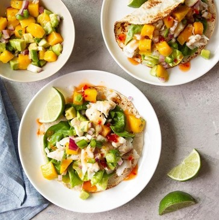

Halibut Soft Tacos
What is Halibut Soft Tacos?
This recipe yields 16 pieces of fish and is perfect for serving a family of four with about four tacos each. We’ve also made fish tacos with halibut fillets in a grill pan over medium heat on an outdoor grill but I much prefer the deep fried fillets!
Ingredients
1 medium mango, peeled and cubed
1/2 cup cubed avocado
1/4 cup chopped red onion
2 tablespoons chopped seeded jalapeno pepper
1 tablespoon minced fresh cilantro
3 teaspoons olive oil, divided
1 teaspoon lemon juice
1 teaspoon honey
1 pound halibut steaks (3/4 inch thick)
1/2 teaspoon salt
1/4 teaspoon pepper
4 Bibb lettuce leaves
4 flour tortillas (6 inches), warmed
4 teaspoons sweet Thai chili sauce
Instructions / How to Cook
1. In a small bowl, combine the mango, avocado, onion, jalapeno, cilantro, 2 teaspoons oil, lemon juice and honey; set aside. Brush halibut with remaining oil; sprinkle with salt and pepper.
2. Grill halibut on a greased rack, covered, over high heat or broil 3-4 in. from the heat until fish flakes easily with a fork, 3-5 minutes on each side.
3. Place lettuce leaves on tortillas; top with fish and mango mixture. Drizzle with chili sauce.
4.
5.